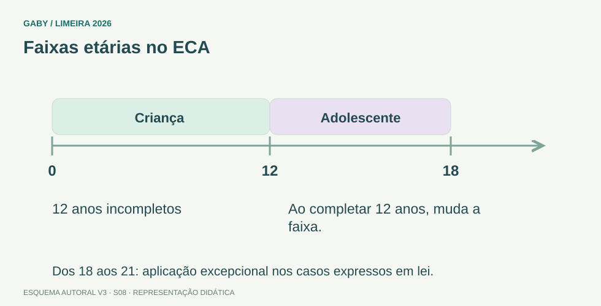

Objetivos do módulo
- Estudar os artigos do ECA expressamente delimitados pelo edital.
- Compreender proteção integral, prioridade absoluta e condição peculiar de pessoa em desenvolvimento.
- Dominar direitos educacionais dos arts. 53 a 59 e deveres escolares relevantes.
- Reconhecer regras básicas de profissionalização e proteção no trabalho dos arts. 60 a 69.
Faixas etárias no ECA

Descrição em texto do esquema
- Antes de 12 anos: Criança: até 12 anos incompletos.
- Dos 12 aos 18: Adolescente, segundo o art. 2º.
- Exceção legal: Aplicação entre 18 e 21 em casos expressos.
Oficina visual · aplique o esquema
Uma pessoa completou 12 anos hoje. Para o ECA, ela ainda é criança? Explique.
Atividade autoral complementar da V3. Registre sua resposta; a resolução está no arquivo de gabarito e revisão.
Mapa do conteúdo
1. Arts. 1º a 6º - proteção integral
O ECA adota a doutrina da proteção integral. Criança, para efeitos do Estatuto, é a pessoa até 12 anos incompletos; adolescente é aquela entre 12 e 18 anos. Em casos expressos em lei, o Estatuto pode aplicar-se excepcionalmente às pessoas entre 18 e 21 anos.
Crianças e adolescentes são titulares de direitos fundamentais e devem receber oportunidades e facilidades para desenvolvimento físico, mental, moral, espiritual e social em condições de liberdade e dignidade.
| Conceito | Regra |
|---|---|
| Criança | Até 12 anos incompletos. |
| Adolescente | De 12 a 18 anos. |
| Proteção | Integral. |
| Interpretação | Considera fins sociais, bem comum, direitos/deveres e condição peculiar de pessoa em desenvolvimento. |
2. Prioridade absoluta e proteção contra violações
O art. 4º atribui à família, comunidade, sociedade em geral e poder público o dever de assegurar direitos com absoluta prioridade. O texto vigente recebeu alterações recentes, por isso é importante usar fonte atualizada.
O art. 5º veda negligência, discriminação, exploração, violência, crueldade e opressão, responsabilizando atentados aos direitos fundamentais.
3. Arts. 53 a 59 - direito à educação
O art. 53 assegura igualdade de condições para acesso e permanência, respeito pelos educadores, possibilidade de contestar critérios avaliativos com recurso às instâncias escolares superiores, organização e participação em entidades estudantis e acesso à escola pública e gratuita próxima da residência, além de regra de vagas para irmãos na mesma etapa ou ciclo.
Pais ou responsáveis têm direito de ter ciência do processo pedagógico e participar da definição das propostas educacionais. O art. 54 trata do dever do Estado; o art. 55, da obrigação de matrícula pelos pais ou responsável.
4. Arts. 60 a 69 - profissionalização e trabalho
O capítulo trata da profissionalização e proteção no trabalho. A aprendizagem é formação técnico-profissional ministrada segundo a legislação educacional. A formação deve garantir acesso e frequência ao ensino regular, atividade compatível com o desenvolvimento e horário especial para seu exercício.
O art. 67 veda ao adolescente trabalho noturno, perigoso, insalubre ou penoso, em locais prejudiciais ao desenvolvimento ou em horários/locais que não permitam frequência à escola. O art. 69 assegura direito à profissionalização e proteção no trabalho, respeitada a condição peculiar de pessoa em desenvolvimento e capacitação profissional adequada.
5. Como lidar com texto legal antigo dentro do ECA
Alguns dispositivos históricos do ECA trazem redações que devem ser lidas em conjunto com a Constituição e legislação posterior. Em prova que peça literalmente o ECA, observe a redação compilada oficial e as remissões (“vide Constituição Federal”).
Não use apostilas antigas como única fonte: o ECA sofreu alterações inclusive em 2025 e 2026.
Exemplos resolvidos passo a passo
Exemplo 1
Situação: Questão afirma que criança é a pessoa com até 12 anos completos.
Exemplo 2
Situação: Aluno contesta critério avaliativo e a alternativa diz que o ECA proíbe recurso interno.
Exemplo 3
Situação: Reiteração de faltas injustificadas persiste mesmo após os recursos escolares.
Pegadinhas e erros frequentes
- Trocar “12 anos incompletos” por “12 anos completos”.
- Reduzir prioridade absoluta apenas ao poder público.
- Esquecer o direito de contestar critérios avaliativos.
- Comunicar situações sem observar o fluxo legal/escolar aplicável.
- Estudar versão antiga do ECA sem alterações recentes.
Resumo de prova
- Criança: até 12 anos incompletos.
- Adolescente: 12 a 18 anos.
- Proteção integral + prioridade absoluta.
- Art. 53: direitos educacionais do aluno.
- Pais/responsáveis têm direito de ciência do processo pedagógico.
- Art. 56: hipóteses de comunicação ao Conselho Tutelar.
- Arts. 60–69: profissionalização e proteção no trabalho.
- Frequência escolar não pode ser inviabilizada pelo trabalho.
Exercícios do módulo
Resolva sem consultar o arquivo de gabarito. As questões são autorais e construídas para treinar os conceitos do edital.
- até 14 anos
- até 12 anos de idade incompletos
- até 12 anos completos
- até 10 anos
- entre 12 e 18 anos de idade
- entre 10 e 16 anos
- entre 14 e 21 anos em qualquer caso
- acima de 18 anos apenas
- incapacidade absoluta em toda situação
- proteção apenas judicial
- responsabilidade exclusiva da escola
- proteção integral
- dispensar frequência
- escolher qualquer regra escolar
- contestar critérios avaliativos e recorrer às instâncias escolares superiores
- alterar a nota por vontade própria
- dispensar matrícula
- ter ciência do processo pedagógico
- alterar registros sem procedimento
- impedir toda avaliação
- Conselho Tutelar
- almoxarifado
- cartório eleitoral
- fornecedor
- permita estudo
- seja compatível com desenvolvimento
- respeite proteção legal
- impeça a frequência à escola
- apenas a vontade do agente público
- exclusivamente idade cronológica
- a condição peculiar da criança e do adolescente como pessoas em desenvolvimento
- somente interesse financeiro
- exclusivamente dos pais
- da família, comunidade, sociedade em geral e poder público
- apenas da escola
- somente do Judiciário
- sua condição peculiar de pessoa em desenvolvimento
- somente produtividade
- dispensa da escola
- trabalho noturno como regra
Quando terminar, abra Secretário de Escola 08 - ECA - arts. 1 a 6 e 53 a 69 - Gabarito e Revisão.
Checklist de domínio
- ☐ Estudar os artigos do ECA expressamente delimitados pelo edital.
- ☐ Compreender proteção integral, prioridade absoluta e condição peculiar de pessoa em desenvolvimento.
- ☐ Dominar direitos educacionais dos arts. 53 a 59 e deveres escolares relevantes.
- ☐ Reconhecer regras básicas de profissionalização e proteção no trabalho dos arts. 60 a 69.
Meta do módulo: 80% ou mais nas questões, sem depender de consulta.
Referências e conteúdos auxiliares
- Brasil — Lei 8.069/1990, ECA, texto compiladoProteção integral e direitos da criança e do adolescente. Leia o intervalo exigido no programa.
- Brasil — Constituição Federal, texto compiladoLeia os dispositivos indicados no módulo e suas remissões no texto oficial.
Referências externas de apoio consultadas para a V3 em 27/09/2026. A origem das questões é o material autoral do projeto; estes links não indicam que uma instituição publicou ou validou os exercícios. As páginas externas precisam de internet. Em informática, confira a versão do programa; em legislação, observe o recorte e as regras de atualização do edital.